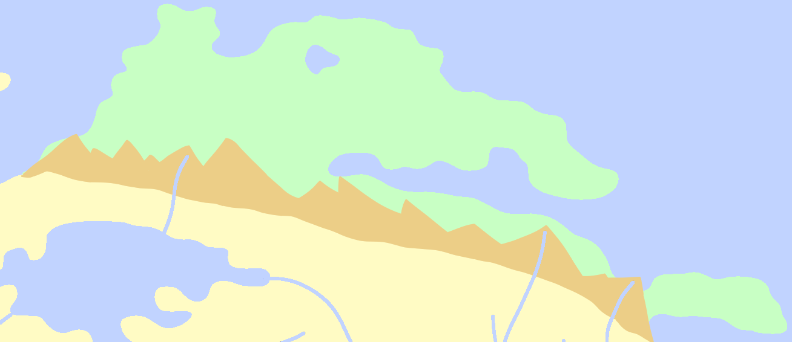
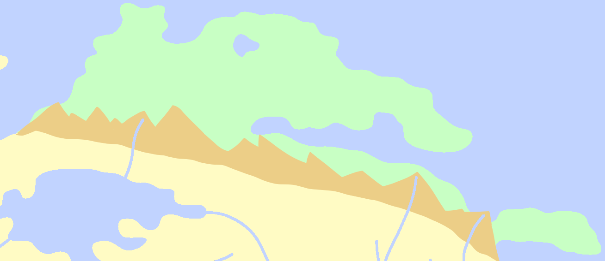

Tiptop
The most famous feature of Tiptop is the Great Tiptop Railway, a network of train tracks that helps keep the region interconnected, as traversing the cold deserts that make the region up is rather difficult. Banditry is not an uncommon occurence while riding on the railway.
Airships are not generally used to get to or within Tiptop. Tunnels have been made through the Tiptop Mountains to get to the region from Dayglare or Drosera, and though air travel is certainly possible from Antiri, most travelers opt for boats due to their greater reliability over long distances. With the railway infrastructure in Tiptop already set, airships never took off in the region.
Close